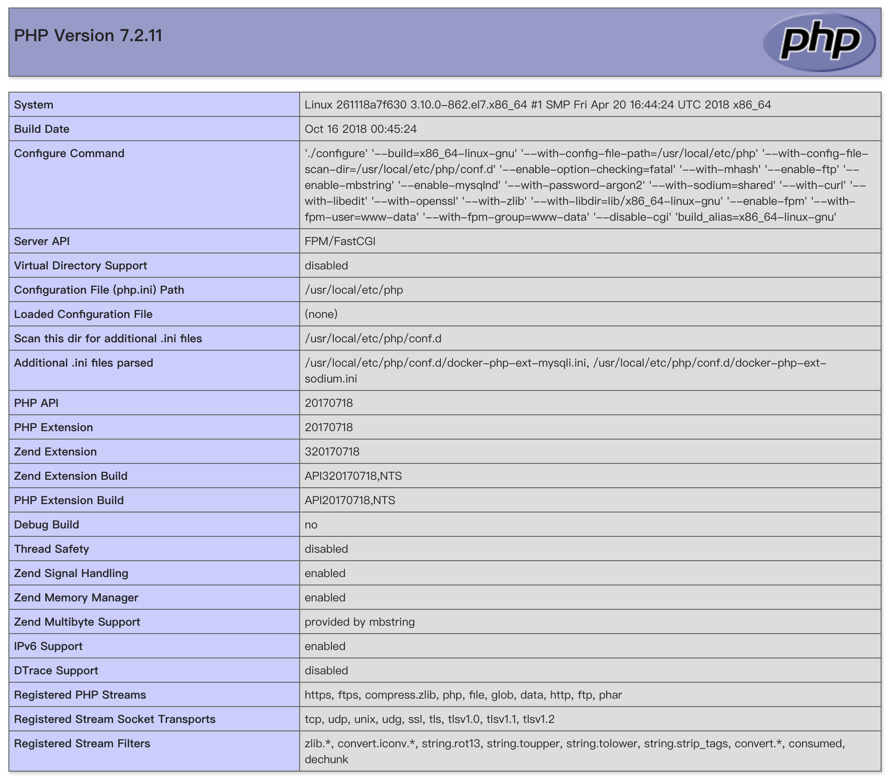
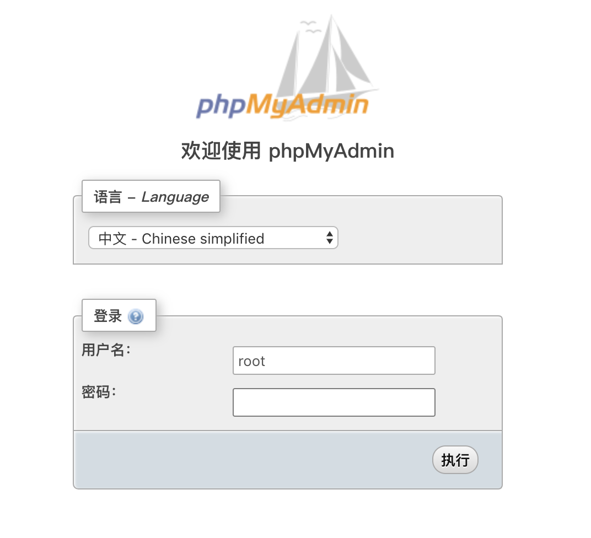

基于Docker搭建LNPM环境
作为一只iOS前端工程师，最近对PHP产生了兴趣，我认为这不属于不务正业，作为一个程序员不应该把自己局限在一个封闭的领域当中，应该时刻保持好奇心，所以我对“世界上最好的语言”开始了探索～
工欲善其事，必先利其器，首先就要搭建开发环境，由于本人不喜欢因为开发环境把自己的电脑搞得乱七八糟，乱安装一些有的没的依赖开发包，所以我选择虚拟机+Docker来搭建环境～
下面我们开始：
Docker准备
我选择了完全兼容Redhat系统的CentOS7发行版Linux系统，下载Linux并且虚拟机安装系统这里就省略了，准备好Linux系统就可以开始安装Docker了。
删除旧版本
如果以前安装过想重新安装新版本请先使用下面的命令卸载旧版本的Docker，第一次安装请直接到第二步
1 | sudo yum remove docker \ |
Docker安装设置
Docker提供两种安装方式，官方推荐使用软件仓库的方式安装Docker，方便更新等操作，另一种是以RPM的方式安装，这里不做介绍～
直接用官方推荐的方式安装，首先设置Docker的软件仓库
设置Docker的官方软件仓库
先安装Docker依赖的软件包
1
2
3sudo yum install -y yum-utils \
device-mapper-persistent-data \
lvm2设置稳定版本的
Docker仓库地址，Docker还提供了测试版本的地址，这里我们不需要，只要稳定版本就可以了。1
2
3sudo yum-config-manager \
--add-repo \
https://download.docker.com/linux/centos/docker-ce.repo
正式安装Docker
安装
Docker的最新版本1
sudo yum install docker-ce
启动
Docker服务1
sudo systemctl start docker
测试
Docker是否工作正常1
sudo docker run hello-world
如果输出了
hello world说明Docker已经安装正常了
编写Dockerfile
Dockerfile是用来制作镜像使用的一系列Docker命令的脚本文件，docker build命令会根据Dockerfile中的设置生成我们自定义的镜像。
首先准备好一个目录结构如下：
1 | testphp #你自定义的一个目录名 |
在php-mysqli目录下的Dockerfile文件中，输入如下内容:
1 | FROM php:7.2.11-fpm #基于PHP官方镜像7.2.11-fpm版本制作自定义镜像 |
完成以后不用手动运行docker build命令生成镜像，稍后使用docker-compose自动帮我们构建镜像。
安装docker-compose
docker-compose是Docker提供的用于管理多个Docekr容器的工具，Docker推荐的理念是，一个容器运行一个服务进程，这里我们搭建的环境包括，一个PHP服务进程、一个Nginx服务进程、一个phpadmin进程（用于方便的操作mysql数据库的工具）、一个mysql服务进程，总共4个，所以需要先安装docker-compose。
下载
docker-compose命令文件1
sudo curl -L "https://github.com/docker/compose/releases/download/1.22.0/docker-compose-$(uname -s)-$(uname -m)" -o /usr/local/bin/docker-compose
为
docker-compose命令文件赋予可执行权限1
sudo chmod +x /usr/local/bin/docker-compose
测试安装是否正确
1
sudo docker-compose --version
如果正常输出版本号说明安装完成
编写docker-compose.yml
docker-compose命令可以根据我们编写的docker-compose.yml文件自动的管理Docker镜像。
在我们自己建立的根目录下面新建一个docker-compose.yml，输入如下内容：
1 | version: '3' #指定docker-compose文件的版本，低版本不支持services、 |
准备Nginx和Mysql的配置文件
这里我们需要把配置文件放到我们的指定的目录中，稍后更改配置不需要进入到容器内部，也能更好的管理配置我们的服务。
有两种方式准备镜像文件，一是自己从头编写，而是从镜像当中复制一个默认的再根据自己的需要去修改，这里我们选择从镜像当中复制。
Nginx配置文件
准备Nginx配置文件
复制Nginx文件
启动一个临时容器
1
sudo docker run --name tmp-nginx-container -d nginx
从临时
nginx镜像当中复制配置文件 放到我们自己建立的nginx/conf目录中1
sudo docker cp tmp-nginx-container:/etc/nginx/nginx.conf ./nginx/conf/nginx.conf
删除建立的临时容器
1
sudo docker rm -f tmp-nginx-container
编辑Nginx配置文件
编辑文件内容如下：
1 |
|
Mysql配置文件
同样复制Mysql的配置文件
启动一个临时的
Mysql容器1
sudo docker run --name tmp-mysql-container -d mysql:5.7.24
从临时的
Mysql容器中复制配置文件到我们指定的目录1
sudo docker cp tmp-mysql-container:/etc/mysql/my.cnf ./mysql/conf/my.conf
删除临时的
Mysql容器1
sudo docker rm -f tmp-mysql-container
这里我们使用默认的mysql配置就可以了。
查看虚拟机的IP地址加入到host文件当中
在虚拟机的终端中输入:
1 | ifconfig eth0 #查看默认网卡的信息 |
其中的inet 192.168.31.150就是我们虚拟机的IP地址，我本人的电脑是Mac系统，所以回到在我的Mac系统电脑的终端中输入：
1 | sudo vim /etc/hosts |
将我们指定的虚拟主机名和IP地址以如下格式加入到host文件中 然后保存退出。
1 | 192.168.31.150 test.ng #Ngxin服务地址 |
稍后我们就可以直接在浏览器中输入http://test.ng/访问Nginx测试了。
启动我们的服务
回到虚拟机中，我们目前为止的文件结构如下：
1 | testphp |
编辑我们的index.php文件，输入如下内容：
1 |
|
有些人不输入<?php 而是直接写<?，导致出现错误，还得修改什么php.ini配置项，这里我建议就别给自己找麻烦，按照标准写法就可以了，别起什么幺蛾子～
编辑testmysql.php文件用来测试能否连接到Mysql数据库，输入如下内容：
1 |
|
确保我们在自己定义的根目录中输入：
1 | sudo /usr/local/bin/docker-compose up -d |
如果输入完成后可以看到四个容器都启动了，那么代表我们成功了，如果出现了错误，请回到上面仔细对照配置项，或者Google、Baidu以及留言给我一起解决～
测试我们的服务
先在我们自己电脑的浏览器中输入地址http://test.ng/,成功页面如下图：

以上代表我们的Nginx和PHP已经配合完美了～～
再来测试phpMyAdmin是否也成功启动了，在浏览器中输入地址http://phpadmin.net访问，成功页面如下图：

出现上图代表phpMyAdmin启动成功，如果输入我们配置的Mysql密码可以正常登陆，代表phpMyAdmin和Mysql配合完美了～
这里如果登陆成功了，现在数据库中新建一个名叫testdatabase数据库，用来给我们测试PHP是否能正常连接到Mysql，
现在见证奇迹的时刻到了～，在浏览器中输入http://test.ng/testmysql.php访问，如果页面显示The connection is successful.那就代表成功了～，可以尽情的玩耍了～～。
Mysql8.0更改默认密码验证方式的导致PHP连接报错的问题
我在使用Mysql8.0版本的镜像来配置时，发现PHP默认的配置不能登录到Mysql，导致连接报错，原来是Mysql8.0改了密码验证方式，如果想要正常连接，需要在Mysql数据库中把要登陆的用户密码的验证方式从caching_sha2_password改为mysql_native_password，这里就不费那个劲了，练习环境5.7版本的Mysql就可以了～